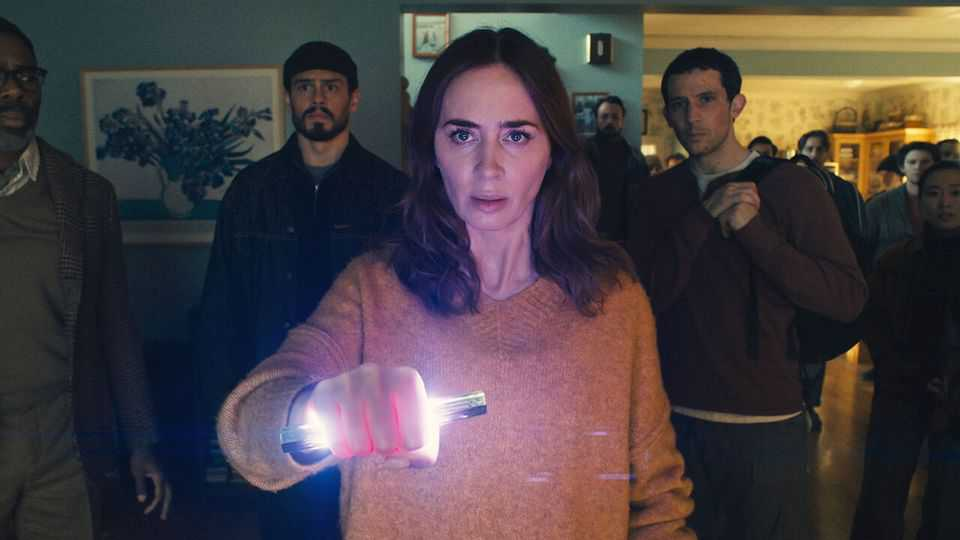

Steven Spielberg has more to say about aliens
Returning to them in “Disclosure Day”, the great director raises the stakes
June 11th 2026

You can learn about battles in a war film. A romantic comedy may offer tips about courtship. But alien movies can tell you nothing about aliens. Their message is always about human beings. Steven Spielberg’s alien oeuvre has some enduring morals. Don’t trust the government. Your loved ones may not understand you. Find your way home if you can. “Disclosure Day”, his new release, adds a cosmic plea: give peace a chance.
Breathless and occasionally baffling, the plot of “Disclosure Day” is hard to summarise, but here goes: nuclear conflict looms in America. Yet Daniel (Josh O’Connor), a renegade cyber-security guy, has bigger worries. He is on the run from Wardex, a sinister agency, and its haunted boss (Colin Firth), identifiable as a villain by his posh English drawl. Daniel plans to release Wardex’s record of contacts with alien spacecraft and “non-human biologics”. The archive goes back to 1947, which, as UFO-spotters can attest, was the date of an otherworldly crash-landing in Roswell, New Mexico.
Daniel brings two other important things with him. First, his girlfriend Jane (Eve Hewson), who takes him to a convent where she once trained to become a nun. The sisters are there to reassure Jane—and devout viewers—that belief in aliens isn’t heretical. He also has a mysterious hand-held device, a cross between a shard of kryptonite and a mobile phone, which enables all manner of tricks, including a kind of mind-melding telepathy. What has this gizmo to do with the aliens, you may ask? Don’t expect a straight answer.
Meanwhile Margaret (Emily Blunt, pictured) is a TV meteorologist who wants to be a news anchor. If only she had a scoop to break! After an eerie bird visits the flat she shares with her slightly unsatisfactory boyfriend, she finds she can speak Russian and Korean and divine strangers’ intimate thoughts.
The mind-melding antics here recall the bit in “E.T.” when the creature’s consciousness blurs with his child saviour’s. That is one of this film’s many familiar Spielberg motifs. Once again, knowledge is sacred but dangerous. Swelling music—by the director’s lifelong collaborator, John Williams, now 94—yields to moments of quiet tenderness. Gags puncture the tension. Fleeing, Margaret tries to run over her compromising phone, but the tyre keeps missing. E.T., phone blown.
The main precedent is “Close Encounters of the Third Kind”, released by Mr Spielberg in 1977. There, too, a man and woman share special insights. “We’re the only ones who know,” he whispers. “It’s always been just the two of you,” says Hugo (Colman Domingo), the whistleblowers’ leader in “Disclosure Day”. Again the anointed ones, Daniel and Margaret, can’t fathom how they know what they know. But rather than just pursuing the ultimate secret, they battle to reveal it.
At bottom this saga, like its predecessor, is a parable of communication. Contact with aliens stands for the struggle to forge connections in a world that may think you’re nuts. The flight from Wardex is also a search for a soulmate and a quest to recover a half-forgotten childhood. Empathy is “the foremost evolutionary advantage”, Hugo intones.
As in “E.T.” and “Close Encounters”, in other words, the problem isn’t them; it’s us. In alien flicks by other directors, the outsiders have been avatars for nuclear war and other threats. Here the hope is that they will forestall it, putting petty human squabbles into intergalactic perspective. (It might seem an odd nitpick in a story that features invisibility and time travel, but Mr Spielberg may overestimate the internet access enjoyed by soldiers of totalitarian states.)
Does it all hold up? It certainly offers something for everyone: stunts and chases, awe and humour, bullets and bunkum. It is a bonanza of chewy themes and memorable shots. A car drives through a house and is dragged by a train; there is a scare at a cliff-edge à la “Indiana Jones”. There are CGI animals, a face reflected in a carving knife and baddies who just keep coming. With his genius for hokey grandeur, Mr Spielberg again manipulates your feelings so expertly that you find yourself on the verge of tears without really knowing why.
Then there are the extraterrestrials. They may mostly be symbolic, but, as at the climax of “Close Encounters”, Mr Spielberg—who avowedly believes in them—cannot leave it at that. It’s a shame, in a way, when they show up, with their spindly legs, tortoise necks and bulbous heads, wise and fragile (like E.T.). The last thing this bursting alien movie needed was the aliens themselves. ■
For more on the latest books, films, TV shows, albums and controversies, sign up to Plot Twist, our weekly subscriber-only newsletter